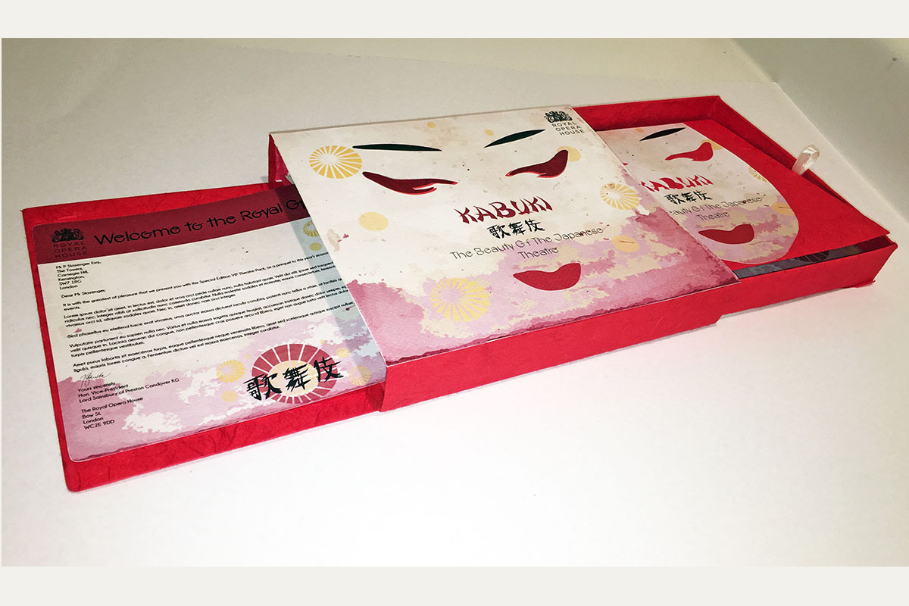
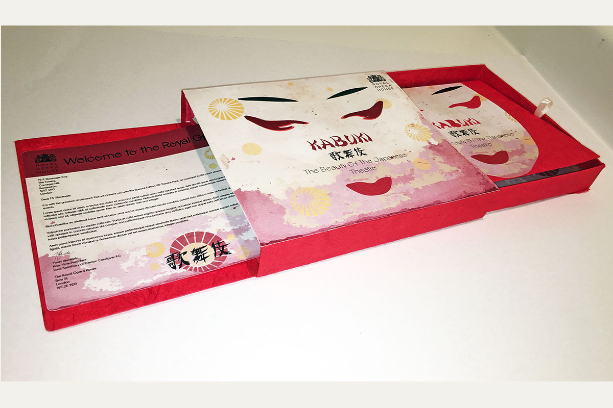

VIP PACK

 

Kabuki – The Beauty of Japanese Theatre
Royal Opera HouseI created an exciting digital and physical special edition theatre pack for the Royal Opera House (Covent Garden, London) that celebrated their 2016 season of various theatre performances from around the world.
My box pack would be presented to guest VIPs on the opening night of each theatre performance.
My pack contains seven page inserts and an outer box and lid design. I have designed a unified suite of design/illustration work that provides VIPs guests with a visual memento pack consisting of my chosen theatre’s history, style, performances and costumes.Get in Touch!
Interested in working together?